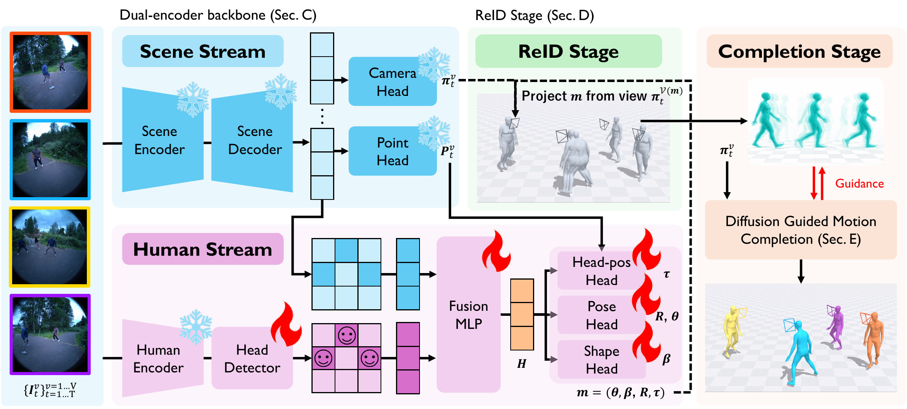
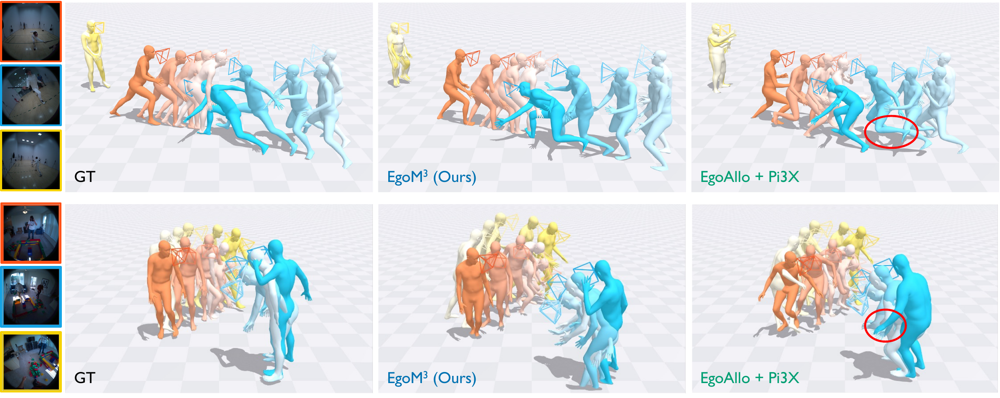
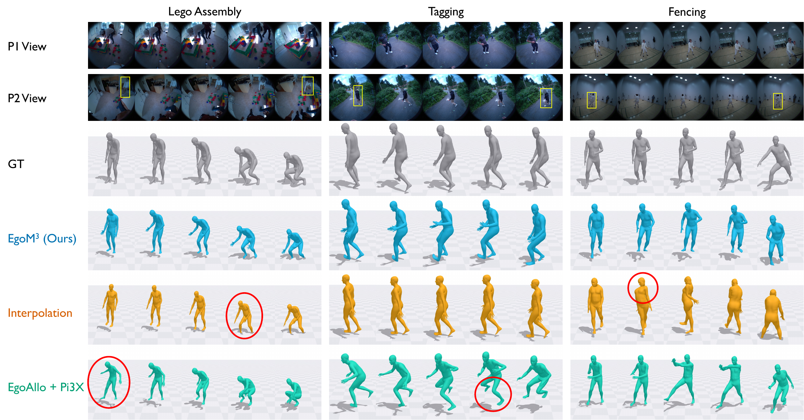

Reconstructions of EgoHumans sequences from egocentric RGB videos alone. Select a sequence below to play it.
In this work we address the problem of reconstructing people without any stationary cameras. Several participants wear egocentric cameras and perform a group activity while moving freely. The participants cannot see their own bodies, but can see the others, and we aim to reconstruct the body meshes of all participants in a shared coordinate system. We refer to this setting as EgoMocap. In EgoMocap, each participant is both an observer and a reconstruction target. This setting is challenging because the cameras are constantly moving, the same person must be matched across views, and participants may temporarily go out of view. We address the challenges by proposing a three-stage method EgoM3. Given RGB videos, EgoM3 first estimates the camera poses and per-view human meshes in a shared coordinate system. Second, it matches body meshes across views and time via geometric consistency of body joints and head poses. It then associates each participant to their camera by comparing the estimated head and camera poses. Third, it completes missing motion using a pretrained diffusion model conditioned on estimated camera trajectories and guided by observed body poses. We evaluate EgoM3 on 34 sequences from the EgoHumans dataset, and our method reduces individual global motion reconstruction error by 19.9% and group-level reconstruction error, including relative spatial arrangements between participants, by 9.1% compared with EgoAllo conditioned on Pi3X estimated camera trajectories.
Reconstructions of EgoHumans sequences from egocentric RGB videos alone. Select a sequence below to play it.
Video not available yet

Pose accuracy and motion quality on 34 held-out EgoHumans sequences. Pose accuracy (PA-MPJPE, WA-MPJPE100, RA-MPJPE100) evaluates the 3D joint error in the body, world, and inter-person frames, while motion quality (Jitter, Accel, Foot Sliding) evaluates temporal smoothness and physical plausibility. Interpolation yields the lowest PA-MPJPE but jittery motion, whereas diffusion-based refinement improves both global accuracy and motion quality. Lower is better; best results are in bold. Units: mm (pose accuracy), km/s3 (Jitter), mm/frame2 (Accel), mm/frame (Foot Sliding).
| Method | Pose Accuracy | Motion Quality | ||||
|---|---|---|---|---|---|---|
| PA-MPJPE | WA-MPJPE100 | RA-MPJPE100 | Jitter | Accel | Foot Sliding | |
| EgoAllo + Pi3X | 142.2 | 184.5 | 220.2 | 0.271 | 31.1 | 20.8 |
| EgoM3 (after ReID stage) + interpolation | 65.5 | 206.9 | 313.7 | 1.130 | 83.2 | 58.1 |
| EgoM3 (after ReID stage) + EgoAllo | 78.2 | 215.9 | 316.5 | 1.257 | 92.0 | 66.3 |
| EgoM3 (Ours) | 79.2 | 147.7 | 200.1 | 0.238 | 26.4 | 24.0 |


@misc{hokari2026egom3,
author = {Hokari, Yamato and Zhu, Zhifan and Hori, Ryosuke and Deguchi, Hiroyuki and Saito, Hideo},
title = {EgoM$^3$: Multi-View Multi-Human Mesh Reconstruction from Egocentric Videos},
year = {2026},
}